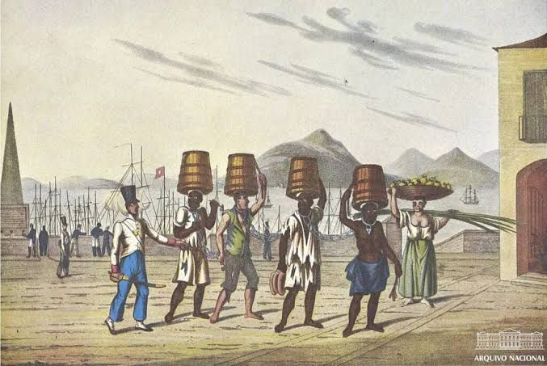
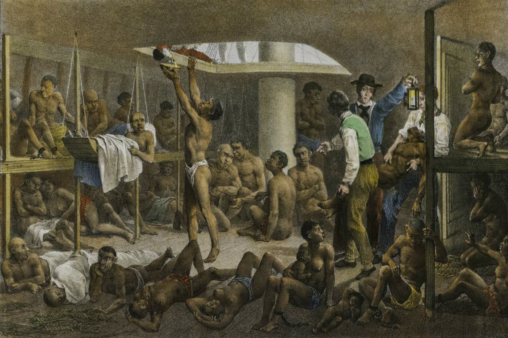
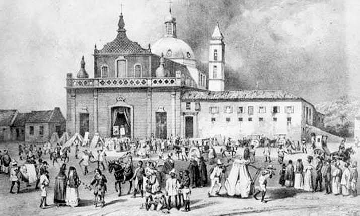
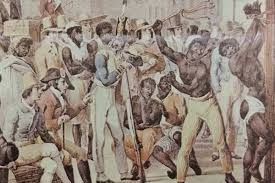

REVOLTA DOS MALÊS
A maior revolta urbana de escravizados do Brasil, símbolo de resistência, liberdade e luta contra a opressão.
Contexto Histórico
- Brasil no período imperial
- Escravidão no século XIX
- Vida dos africanos escravizados
- Influência africana na Bahia
Quem eram os Malês?
- Africanos muçulmanos
- Sabiam ler e escrever em árabe
- Vestiam roupas brancas
- Praticavam o islamismo
Causas da Revolta
- Escravidão
- Intolerância religiosa
- Violência
- Busca por liberdade
Importância Histórica
- Resistência negra no Brasil
- Luta por liberdade
- Legado cultural africano
Linha do Tempo
Crescimento Africano em Salvador
Salvador possuía uma enorme população africana escravizada. Muitos vieram da região da África Ocidental, trazendo cultura, religião e conhecimentos próprios.
Expansão do Islamismo
Africanos muçulmanos passaram a fortalecer suas práticas religiosas e formar grupos organizados na Bahia.
Repressão e Violência
Aumentaram os castigos físicos, perseguições religiosas e o controle sobre africanos escravizados em Salvador.
A Revolta dos Malês
Na madrugada de 25 de janeiro de 1835, os malês iniciaram a revolta armada contra a escravidão e a opressão. O conflito ocorreu nas ruas de Salvador.
Repressão do Governo
A revolta foi reprimida pelas autoridades. Muitos participantes foram presos, castigados, deportados ou mortos.
Fim do Tráfico Negreiro
O tráfico transatlântico de africanos escravizados foi proibido oficialmente no Brasil pela Lei Eusébio de Queirós.
Abolição da Escravidão
A assinatura da Lei Áurea marcou oficialmente o fim da escravidão no Brasil.
Curiosidades
- Os malês escreviam em árabe
- Muitos eram alfabetizados
- A revolta ocorreu em Salvador
Galeria





